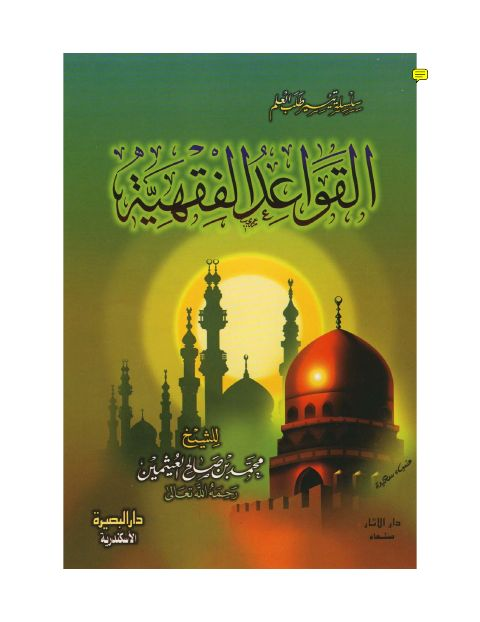
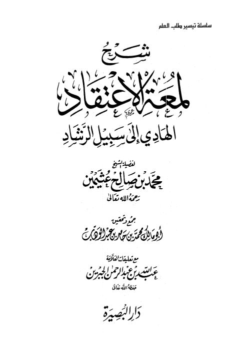
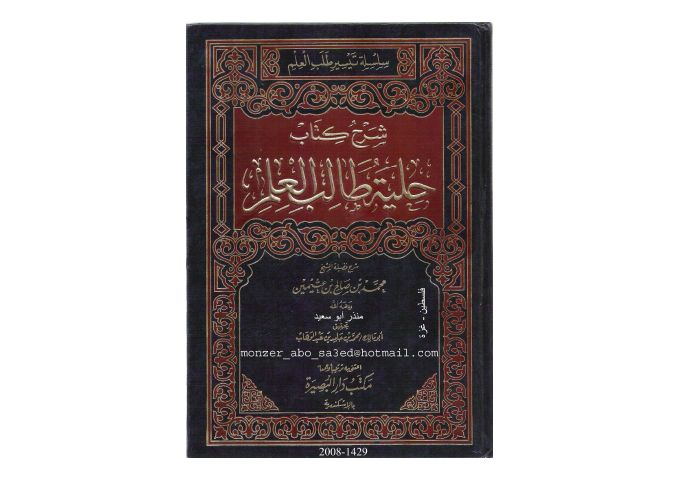

محمد بن حامد بن عبد الوهاب
Author
Resources

القواعد الفقهية- العثيمين القواعد الفقهية- العثيمين محمد بن صالح العثيمين
شرح لمعة الاعتقاد الهادي إلى سبيل الرشاد- دار البصيرة شرح لمعة الاعتقاد الهادي إلى سبيل الرشاد- دار البصيرة محمد بن صالح العثيمين الرياض الندية في شرح الأربعين النووية
الرياض الندية في شرح الأربعين النووية
يحيى بن شرف النووي • ابن دقيق العيد • محمد بن صالح العثيمين
الرياض الندية في شرح الأربعين النووية
الرياض الندية في شرح الأربعين النووية
يحيى بن شرف النووي • ابن دقيق العيد • محمد بن صالح العثيمين

شرح حلية طالب العلم لفضيلة الشيخ بكر أبو زيد شرح حلية طالب العلم لفضيلة الشيخ بكر أبو زيد محمد بن صالح العثيمين